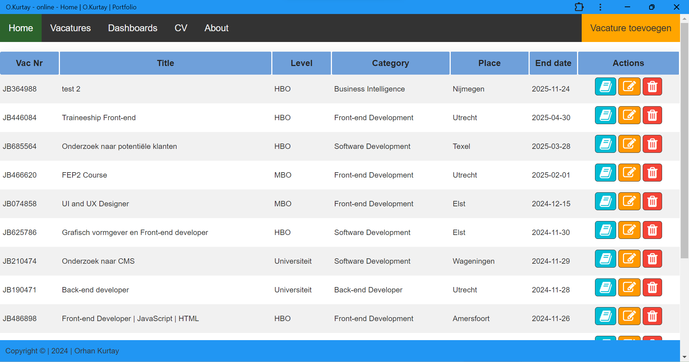
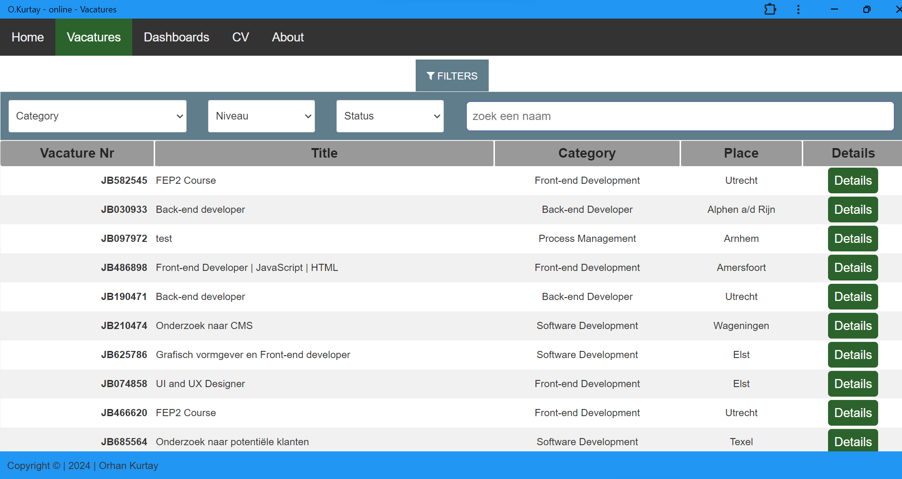
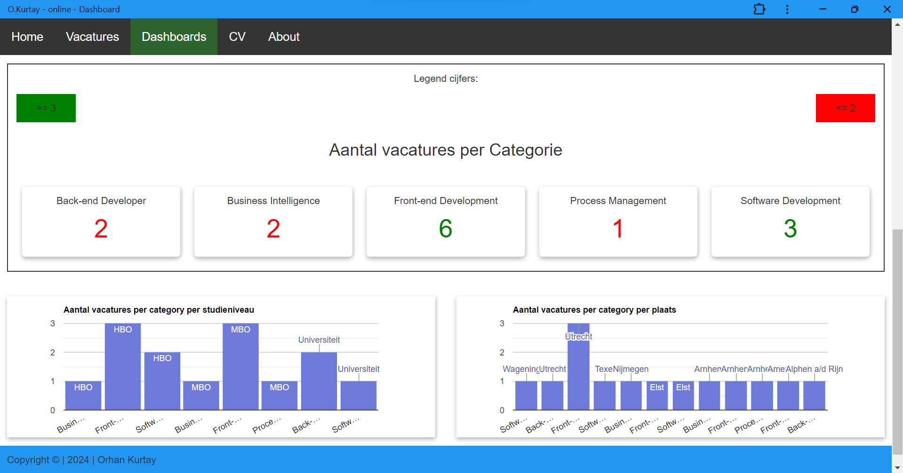
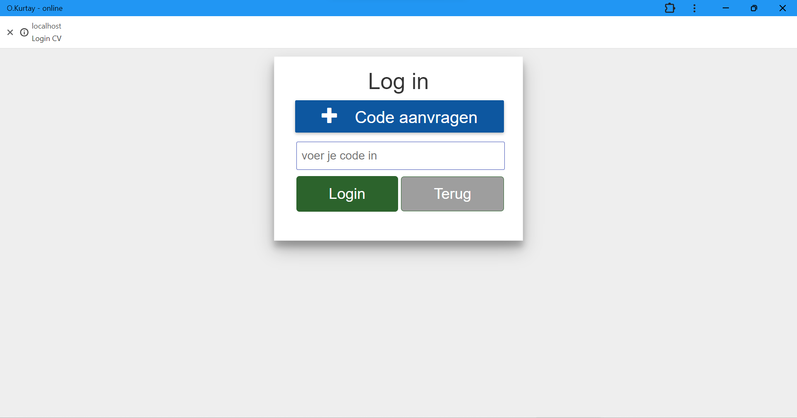
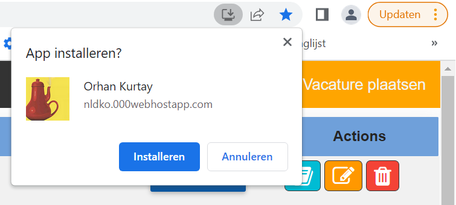
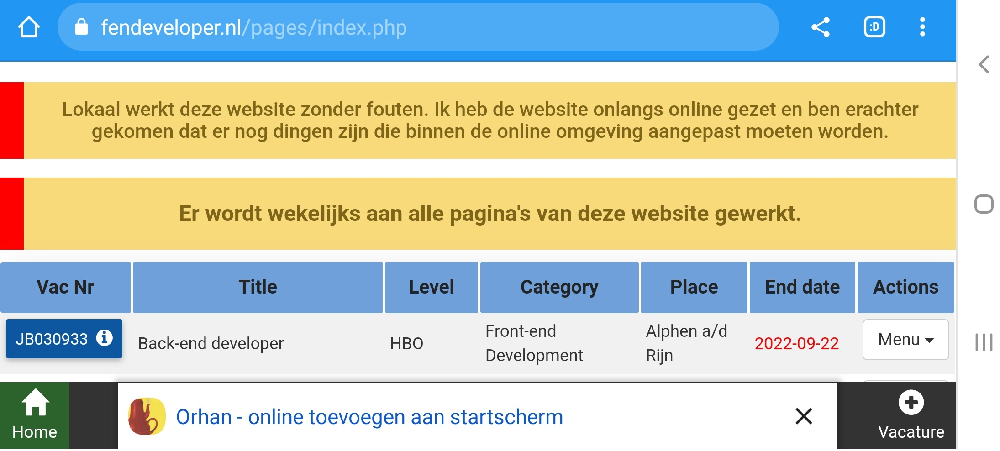

Hieronder ziet u screenshots van mijn website die ik als hobby heb gebouwd. Daarnaast heb ik met Vue.js 3 en Pinia een filterapplicatie gebouwd met zoveel mogelijk filteropties zoals slider, checkboxes, radiobuttons en nog meer. De screenshots van de filterapplicatie zet ik op een later moment op de website.
De website is totaal dynamisch en past zich aan als een gebruiker de data verandert zoals het aantal open vacatures, gesloten vacatures etc. Er is gebruik gemaakt van responsive design, zodat de gebruikers op alle devices de website makkelijk kunnen bekijken. Daarnaast is er rekening gehouden met de UX voor een duidelijk overzicht. U kunt deze website downloaden om als web applicatie te gebruiken, zie de afbeeldingen 5.1 en 5.2 onderaan deze pagina.
Afbeelding 1 is een screenshot van de home pagina van mijn vacature website. Op deze pagina kan een gebruiker een vacature toevoegen, verwijderen, wijzigen of details van een vacature lezen.
Afbeelding 2 hieronder toont de vacature-overzicht pagina en alle toegevoegde vacatures die een gebruiker heeft toegevoegd. Deze pagina bevat filteropties die een gebruiker kan filteren op categorie, niveau en status. Verder kan een gebruiker een vacature zoeken op vacature-nummer, title, categorie, plaats en andere gegevens. De onderstaande pagina is een html pagina en is gebouwd met Angular 1.6.2. De gegevens worden uit de mysql database opgehaald en omgezet in Json format. Daarna worden de gegevens met ng-repeat op het scherm afgedrukt.
Afbeelding 3 laat de dashboard-pagina zien. De onderstaande grafiek is dynamisch en past zich automatisch aan als de data verandert. Voor deze grafiek is gebruik gemaakt van Google charts.
Afbeelding 4 toont een login pagina. Om CV te zien dient een gebruiker in te loggen met eenvooraf gegeven code. Deze code heeft een duur van 7 dagen. Na 7 dagen vervalt de code. Om de code te heractiveren, kan ik de datum via de database verlengen.
Afbeelding 1 : Home
Afbeelding 2 : Vacature overzicht
Afbeelding 3 : Dashboard
Afbeelding 4 : login om cv te zien
Afbeelding 5.1 : PWA - Desktop
Afbeelding 5.2 : PWA - Mobile
